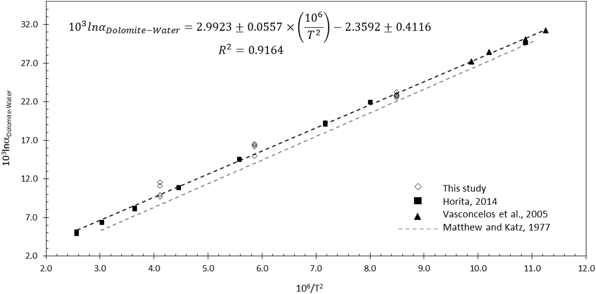

Calibration of the oxygen and clumped isotope thermometers for (proto-) dolomite based on synthetic and natural carbonates

Resumo em Português
A dolomita é um mineral carbonato muito comum em sedimentos antigos, mas raramente é encontrada em ambientes modernos. Devido às dificuldades em precipitar dolomita em laboratório a baixas temperaturas, os mecanismos que controlam sua formação ainda são debatidos após mais de dois séculos de pesquisa. Dois parâmetros importantes para restringir o ambiente de dolomitização são a temperatura de formação e a composição isotópica de oxigênio do fluido a partir do qual ela precipitou. Os isótopos agrupados de carbonato (expressos com o parâmetro Δ47) estão se tornando cada vez mais o método de escolha para obter essas informações. No entanto, enquanto muitos estudos de isótopos agrupados trataram as dolomitas da mesma forma que a calcita, alguns estudos recentes observaram um fracionamento de ácido fosfórico diferente para Δ47 durante a digestão ácida da dolomita em comparação com a calcita. Isso causa incertezas adicionais nas estimativas de temperatura de Δ47 para dolomitas analisadas em diferentes laboratórios usando diferentes temperaturas de digestão ácida. Para abordar esse problema, apresentamos aqui uma calibração de Δ47-temperatura específica para (proto-)dolomita, de 25 a 1100 °C, para uma temperatura de reação ácida de 70 °C e ancorada em padrões de calcita amplamente disponíveis. Para a faixa de temperatura de 25 a 220 °C, obtemos uma relação Δ47-T linear baseada em 289 medições individuais com R² de 0,864: Ao incluir duas dolomitas isotopicamente embaralhadas a 1100 °C, o melhor ajuste é obtido com uma relação de temperatura polinomial de terceira ordem (R² = 0,924): ‰ A aplicação de uma relação Δ47-T de calcita produzida sob condições idênticas de laboratório resulta em temperaturas de formação calculadas de 3 a 16 °C mais frias para dolomitas (com temperatura de formação de 0 a 100 °C) do que usando a calibração específica para (proto-)dolomita apresentada aqui. Para as amostras sintéticas formadas entre 70 e 220 °C, também determinamos a dependência da temperatura no fracionamento isotópico de oxigênio em relação à água. Com base na semelhança entre nossos resultados e dois outros estudos recentes (Vasconcelos et al., 2005 e Horita, 2014), propomos que uma combinação dos três conjuntos de dados representa a calibração mais robusta para (proto-)dolomita formada em uma ampla faixa de temperatura, de 25 a 350 °C. Devido às incertezas no fracionamento de oxigênio e isótopos agrupados com ácido fosfórico para (proto-)dolomita, promovemos o uso de três amostras disponíveis em grandes quantidades como possível material de referência interlaboratorial para medições de oxigênio e isótopos agrupados. Uma amostra da dolomita San Salvatore do Triássico Médio, do sul da Suíça, o padrão de dolomita NIST SRM 88b, já relatado em outros estudos de Δ47, e uma dolomita lacustre do Plioceno de La Roda (Espanha). Este estudo demonstra a necessidade de aplicar relações Δ47-T específicas para (proto-)dolomita para estimativas precisas da temperatura de formação da dolomita, idealmente realizadas em temperaturas idênticas de digestão ácida para evitar incertezas adicionais introduzidas por correções de temperatura de digestão ácida. Além disso, as análises simultâneas de material de referência de dolomita permitirão uma comparação muito melhor dos dados publicados sobre isótopos de oxigênio e de agregados de dolomita entre diferentes laboratórios.